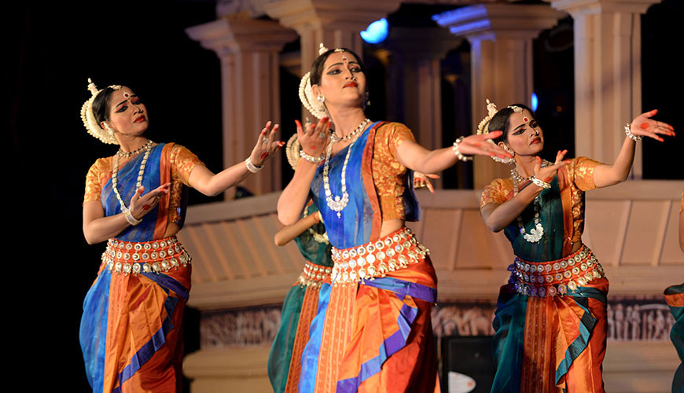
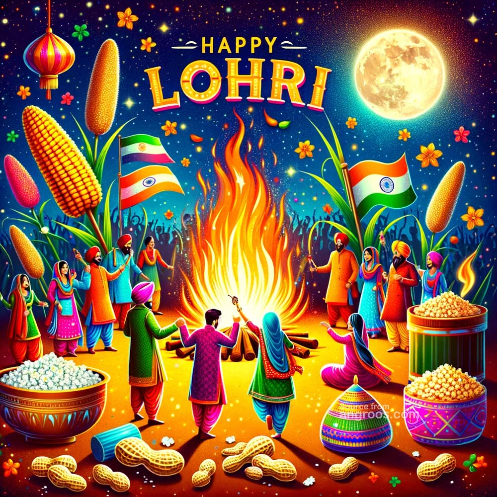
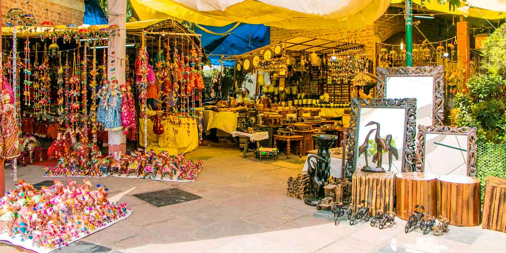
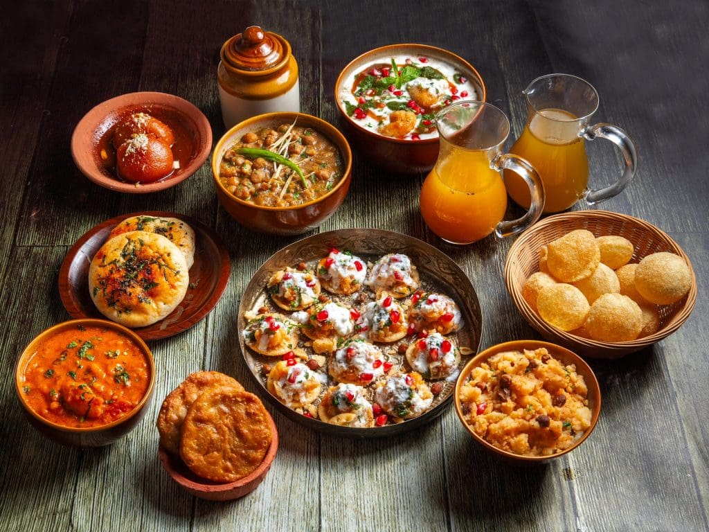

Festivals, Traditions & Vibrant Heritage of the Capital

Delhi’s culture includes a blend of local folk and migrant traditions. Traditional performances like Ramlila (dramatic enactment of Ramayana) and Dhol-Chaap are popular.
Classical music and dance forms like Kathak are also performed during festivals and cultural gatherings.

Delhi celebrates festivals from across India with grandeur. Major festivals include Diwali, Holi, Eid, Gurpurab, and Lohri. Ramlila during Dussehra is a unique cultural spectacle attracting thousands.
Street fairs, mela, and community celebrations showcase Delhi’s vibrant folklore traditions.

Delhi is known for traditional crafts such as pottery, embroidery, brasswork, and miniature paintings. Local markets like Dilli Haat promote folk arts and handmade products, keeping Delhi’s craft heritage alive.
Artisans often tell stories through their work, preserving folklore through creative expression.

Delhi’s streets reflect its cultural diversity. Local cuisine like chaat, paratha, kebabs, and sweets are a cultural experience in themselves.
Food markets and festivals are hubs of music, dance, and folk storytelling.
Delhi’s culture is a living blend of history, folklore, and urban life. The city is home to traditional art forms, storytelling, music, and dance from all over India. Local legends, festivals, and crafts keep its folklore heritage alive for residents and visitors alike.